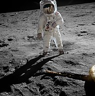

|

|
The competition began on July 30, 1955 when the United States
announced its intent to launch artificial satellites for the
International Geophysical Year. Four days later, the Soviet Union
responded by declaring they would also launch a satellite "in the
near future". The launching of satellites was enabled by
developments in ballistic missile capabilities since the end of
World War II. The competition gained Western public attention with
the "Sputnik crisis", when the USSR achieved the first successful
satellite launch, Sputnik 1, on October 4, 1957. It gained momentum
when the USSR sent the first human, Yuri Gagarin, into space with
the orbital flight of Vostok 1 on April 12, 1961. These were
followed by a string of other early firsts achieved by the Soviets
over the next few years.
Gagarin's flight led US president John F. Kennedy to raise the
stakes on May 25, 1961 by asking the US Congress to commit to the
goal of "landing a man on the Moon and returning him safely to the
Earth" before the end of the decade. Both countries began developing
super heavy-lift launch vehicles, with the US successfully deploying
the Saturn V, which was large enough to send a three-person orbiter
and two-person lander to the Moon. Kennedy's Moon landing goal was
achieved in July 1969, with the flight of Apollo 11, a singular
achievement considered by the Americans as overshadowing any
combination of Soviet achievements that have been made. However,
such an opinion is generally contentious, with others attributing
the first man in space as being a much larger achievement.
|